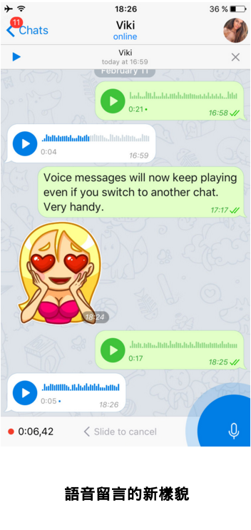
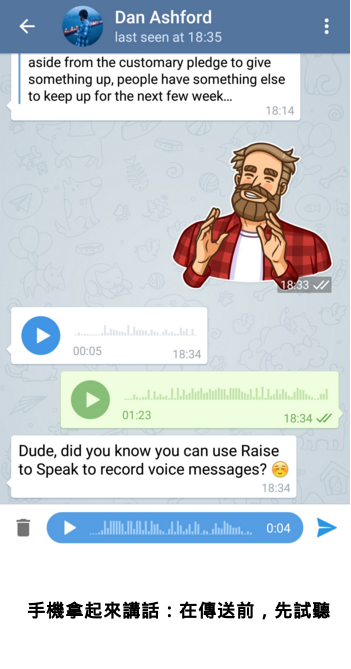
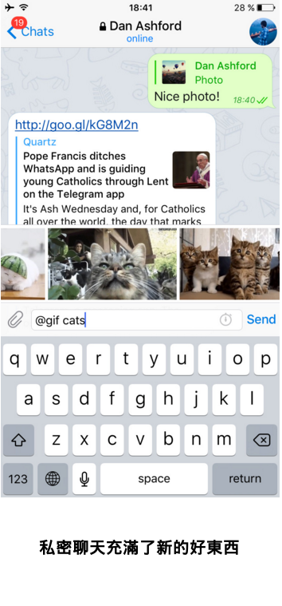
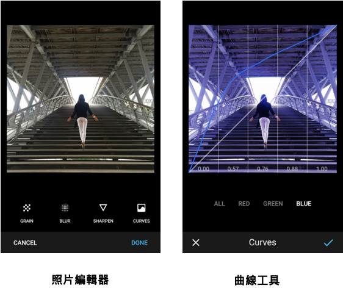

首頁 >
官方新聞 > 語音留言 2.0，私密聊天 3.0 及...（原文）
Telegram 上的語音留言剛得一個全新的介面，包括波形視覺化、一種全新的播放器及「手機拿起來聽取/講話」的功能。
您現在可以開始聽很長的語音留言並切換到其它媒體或聊天室。語音留言將繼續在背景播放。為了讓我們挑戰能多工處理的神？


這個功能涉及到大量的幕後魔法，包括「距離感測器」，「陀螺儀」和「加速度計」。它可在最現代的裝置上運作良好，但仍處於實驗階段。有些手機可能需要從我們開發者這邊神秘的介入。
私密聊天 3.0
憑藉「閱後即焚計時器」和「端到端加密」，私密聊天是傳遞敏感資訊的好方法。今天，我們將雲端聊天室的最佳功能轉移到私密聊天中：詳細的連結預覽、回覆、照片和影片說明文字、貼圖分享、行內機器人和GIF動畫。我們還改善了關鍵視覺化，使私密聊天免於潛在的外來入侵。

...還有...
隱私。當過度活躍的朋友開始將您加入到隨機群組或頻道，它就會迅速變得讓人難以忍受。現在，您可以精確地決定誰可以將您加入到群組和頻道。 例如，“我所有的聯絡人。除了這兩個“。
超級群組。超級群組的建立者也獲得更多的控制權。現在，他們可以改變完美地誰可以添加新的成員到他們的群組：所有現有成員或僅管理員。超級群組最多可以有1000名會員，如果您希望群組成長，尋找秩序和混亂之間的平衡是非常重要的。
分享延伸。在 iOS 裝置上分享已經變得可以更順暢地進行。現在，您可以直接地從預設的 iOS 應用如「聯絡人」，「地圖」，「語音備忘錄」和「照片」中分享任何照片、影片、音訊、文件或位置到任何 Telegram 聊天室或頻道。也可以一次分享東西給數個聊天室或頻道。
附件選單。當您在附件選單選擇這些媒體檔，它們會完美地縮放。請注意，我們已將「圖片搜尋」功能搬移到「照片或影片」部分（點按右上角的放大鏡圖示）。
熱鍵。 使用外接鍵盤的 iPad 用戶獲得熱鍵支援。現在，您可以瀏覽聊天室和傳送訊息，而不必觸碰您的 iPad 螢幕。節省了大量的時間。
照片編輯器。在 Android 角落裡，我們推出了額外的照片編輯工具 - 旋轉，退色，色調和曲線。

我們還沒有完成這個月的更新 - Telegram 的更多功能和好消息將很快地來到您身邊。
2016年2月12日
電報團隊